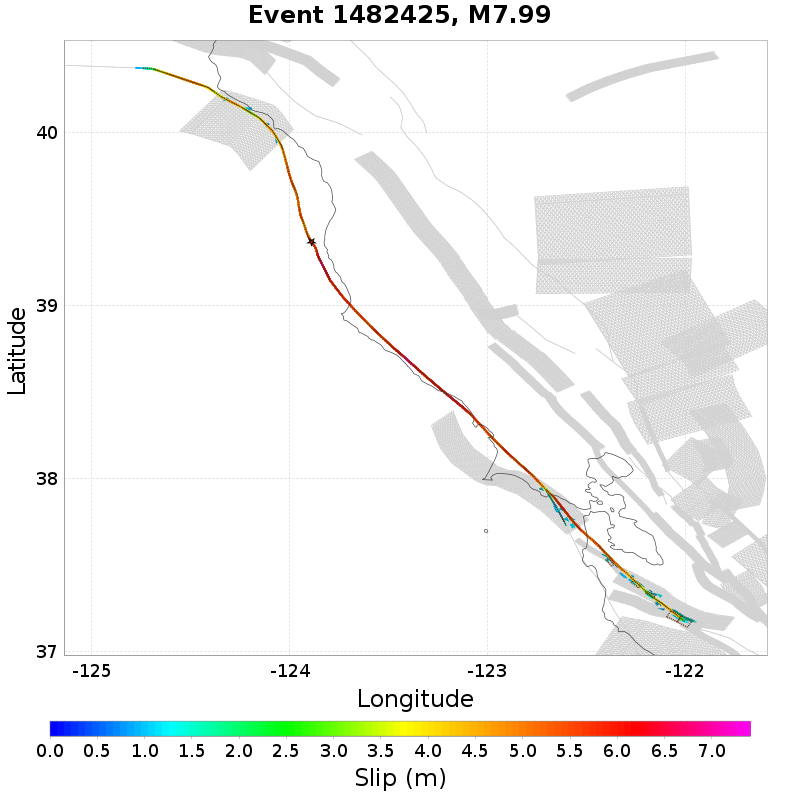
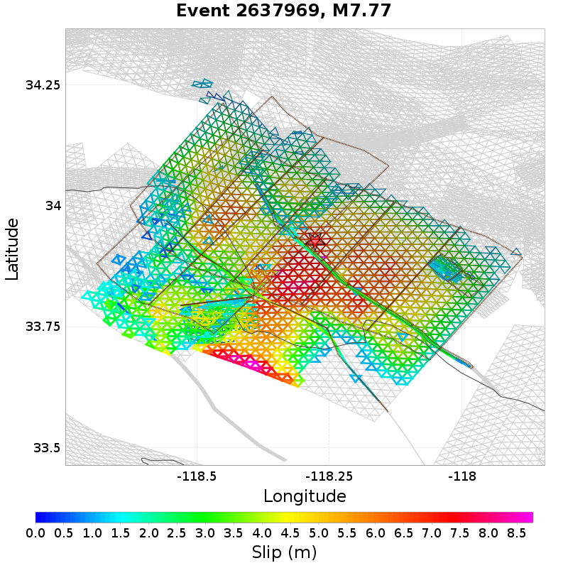
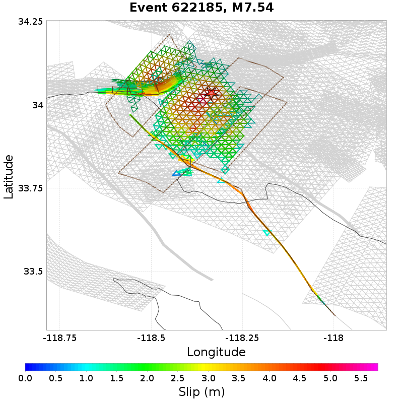
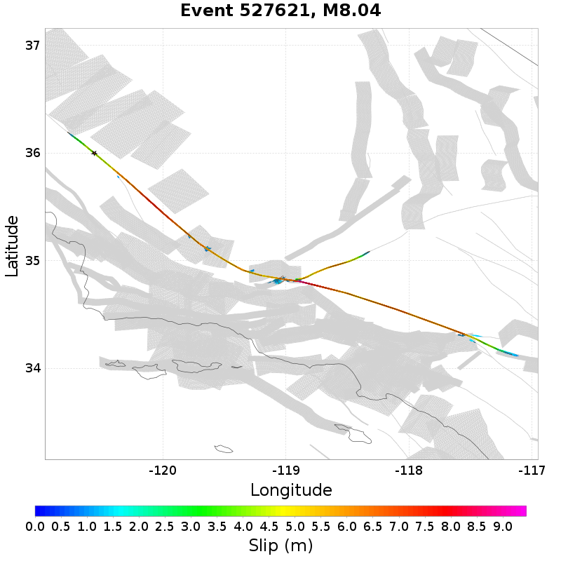
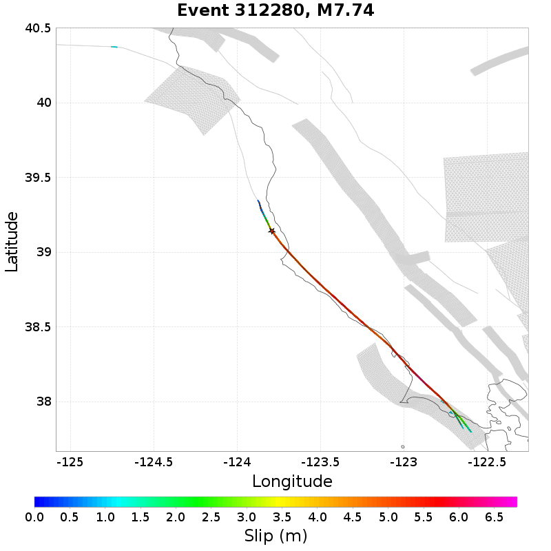

Subsections participate in a rupture if at least 20.0 % of its area ruptures
Total count of mapped UCERF3 subsections (e.g. SAF Mojave S Subsection 3), after application of minimum subsection area filter
| Event ID | Subsection Count | Plot |
|---|---|---|
| 1484996 | 94 (Subsection[s]) | |
| 3010969 | 92 (Subsection[s]) |  |
| 2576392 | 90 (Subsection[s]) |  |
| 565325 | 89 (Subsection[s]) |  |
| 1482425 | 89 (Subsection[s]) |  |
Total count of mapped UCERF3 subsections (e.g. SAF Mojave S), after application of minimum subsection area filter
| Event ID | Parent Section Count | Plot |
|---|---|---|
| 3274601 | 13 (Section[s]) | |
| 3885849 | 13 (Section[s]) | |
| 1193982 | 13 (Section[s]) | |
| 1362893 | 13 (Section[s]) | |
| 3008347 | 13 (Section[s]) |  |
Ratio of the total rupture length (UCERF3 mapped subsection rupture) to the idealized length, defined as the straight line distance between the furthest 2 subsections

| Event ID | Mapped Length Ratio | Plot |
|---|---|---|
| 561917 | 3.82 |  |
| 2637969 | 3.57 |  |
| 2624853 | 3.34 |  |
| 353106 | 3.34 |  |
| 1210600 | 3.3 |  |
Total rupture length (UCERF3 mapped subsection rupture) minus the idealized length, defined as the straight line distance between the furthest 2 subsections
| Event ID | Mapped Excess Length | Plot |
|---|---|---|
| 3869791 | 228.38 (km) |  |
| 1112371 | 215.45 (km) |  |
| 3770823 | 186.28 (km) | |
| 4029912 | 178.08 (km) | |
| 673077 | 176.52 (km) |
Moment of simulator elements not included in mapped UCERF3 subsection rupture

| Event ID | Moment Off Mapped Rupture | Plot |
|---|---|---|
| 4423643 | 1.3036395E19 (N-m) |  |
| 4156317 | 1.2869223E19 (N-m) |  |
| 622185 | 1.2662618E19 (N-m) |  |
| 4950120 | 1.2441654E19 (N-m) |  |
| 3840362 | 1.222424E19 (N-m) |
Event Moment Magnitude
| Event ID | Magnitude | Plot |
|---|---|---|
| 660372 | 8.06 |  |
| 2762888 | 8.04 |  |
| 373646 | 8.04 |  |
| 527621 | 8.04 |  |
| 4373677 | 8.03 |  |
Moment that is at least 100km from the nearest mapped subsection (after application of subsection area threshold)
4 events above threshold of 1 [N-m]

| Event ID | Moment >100km from Mapped | Plot |
|---|---|---|
| 2334300 | 2.07870971E17 (N-m) | |
| 312280 | 1.45769369E17 (N-m) |  |
| 733288 | 8.7181523E16 (N-m) |  |
| 2967140 | 4.8429879E16 (N-m) |  |